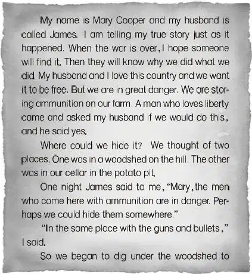
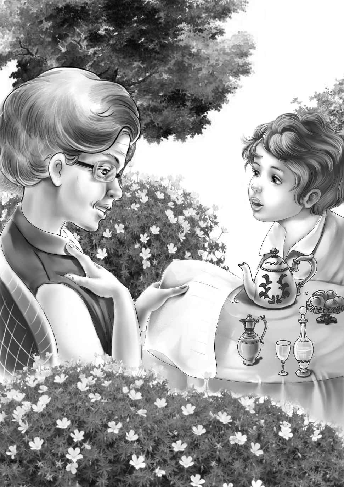
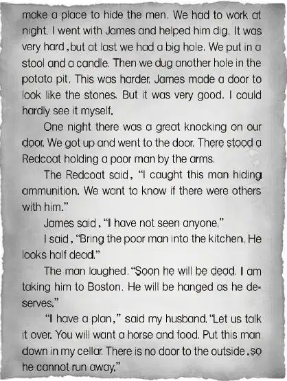
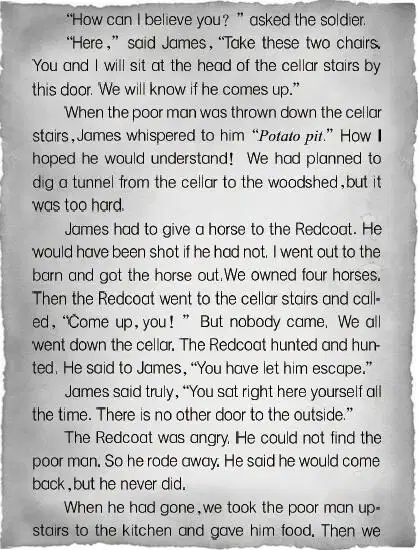
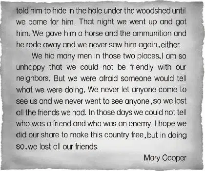

Maggie did not have eggs for lunch. She had a good meal for a strong man. She had cold meat and a hot dish of macaroni and cheese. Andy ate as if he were half starved.
"I've had cold food for a long time," he said. "Even raw eggs."
"We'll soon fix that," said Aunt Jane. She loved to see him eat.
Benny said,"Right after lunch are you going to show us that thing you found?"
"Right! Just as soon as lunch is over. I have it right here in my pocket. Maybe you won't think much of it. But I do."
"I'm sure we will,"said Jessie,"if you found it in the woodshed. That's an exciting place."
"Yes,and so is your own cellar," said Andrew.
At last he could not eat any more. He said,"All right. Come out in the yard again and see my treasure. This is in a bag too."
When Aunt Jane was in her chair,Andy gave her a leather bag.
"What a funny looking bag!" said Benny."It must be very old."
Aunt Jane opened the bag. It was stained and ready to fall apart. Inside was another piece of leather. Inside that was an old paper covered with writing.
"The ink is brown," said Violet.
Aunt Jane carefully unfolded the paper."It is dated June,1775," she said."Shall I read it?"
"Yes," said Benny. "Just as quick as you can."
Now at last the whole story would be told.
So Aunt Jane began to read. She read slowly because sometimes the writing was hard to read.





Of course Benny was the first to speak. He said,"Isn't that too bad? To lose all their friends? But they helped win the war,that's sure. Did you find this in the woodshed?"
"I found that long ago,young feller! I have carried it with me all these years."
"How did you find the hole under the woodshed,Andrew?" asked Aunt Jane.
"Easy,I went up there one day and I went in and looked it over. I thought the floor looked queer,so I found the cover and went down into the hole. I found the flintlock and bullets and this bag. I tried to make Jane come and see it,but she wouldn't go."
"I do remember," said Aunt Jane."But you were always up to some new trick,so I wouldn't go. I'm sorry now."
"Never mind,Jane. The past is past. One day I went down to get potatoes for your mother and I found that hole,too. I wanted to tell somebody,but I didn't dare. At last I showed the gun to John Cole,but he wasn't interested. He said he didn't know how to shoot it. He wasn't interested in the story,either. So I didn't even read it to him."
Henry looked thoughtful."I think I see now," he said."Way back,Mary Cooper acted so queerly that at last no one had anything to do with her. I suppose people began to make up stories to explain why they wouldn't go to the Cooper place. Finally I expect that no one remembered how it all started.People just knew there was something mysterious about the farm. And if anything new went wrong,someone was always ready to say,'Well what can you expect?'"
Andrew looked at Henry and nodded."I think you understand the people around here. Sometimes they act just that way."
"All those ideas about something wrong with this place lasted a long,long time," said Jessie."We'll have to tell the real story now."
"Don't worry!" cried Andrew."When people see me,the story will go like wild fire. It may even be in the Sunday papers!"
Aunt Jane was laughing."You'll put it in the Sunday papers yourself! My,my! It will be exciting living with you,Andy!"
"What?" cried Andy."Did you say living with me,Jane? You kids just run off and let me talk to your aunt!"
In one minute the young Aldens were on the other side of the house. They sat down on the back step. Maggie came to the door."Is Miss Jane all right?" she asked.
"She's fine," said Benny."I think she's going to marry Andy Bean. Then she'll be Mrs. Bean after all."
"I hope so," said Maggie.
"Do you?" asked Jessie.
"Yes,I do. I feel homesick for the West. Sam and his wife feel the same way. If Miss Jane was in good hands,we'd all go back to the ranch country."
Henry said,"Andy won't be a very good farmer,but he's a strong man and Aunt Jane can hire men to run the farm."
"I just wonder what Andy will find for excitement up here?" said Jessie.
"Maybe he'll take Aunt Jane on trips," said Benny.
"Oh,but she isn't strong enough to go on trips!" cried Violet.
Maggie said, "My dear girl,your Aunt Jane is strong enough to do anything she wants to do. And if she doesn't want to,she's as weak as a rag."
"That's right," said Benny. "I'm even like that myself."